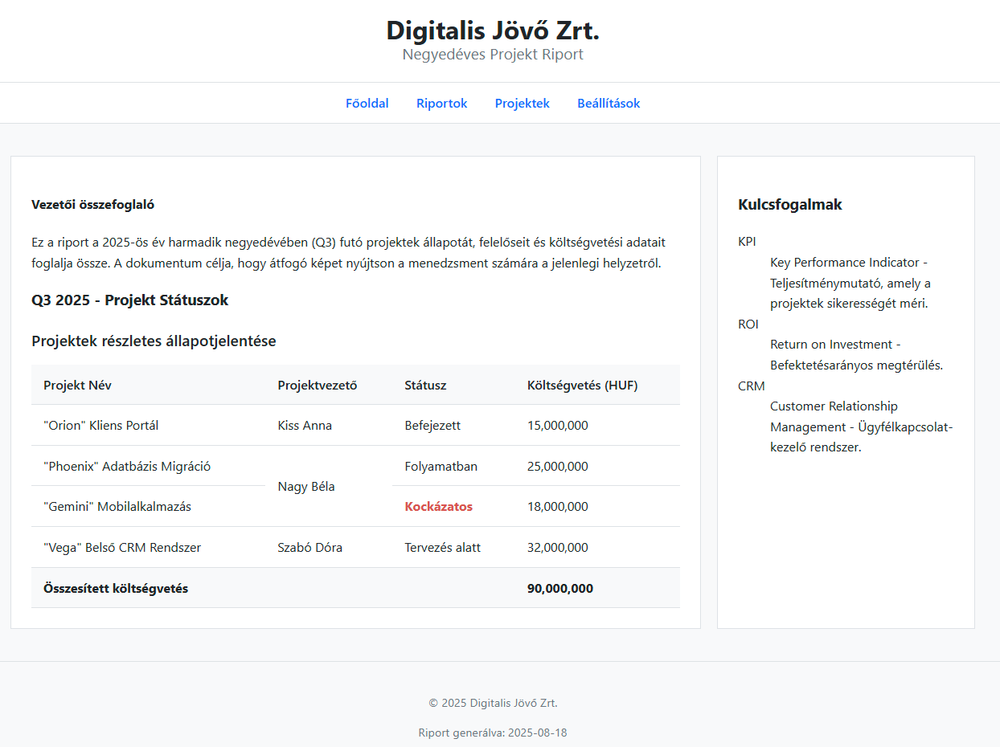

Útmutató a projekt riport felépítéséhez
Ez az útmutató végigvezet a projekt_riport.html oldal elkészítésének folyamatán. A célunk nemcsak egy működő oldalt létrehozni, hanem megérteni a mögötte lévő szemantikus struktúrát. Minden nagyobb lépés egy-egy célt képvisel.
A feladat a HTML struktúra kialakítása. A stílusbeállításokkal még nem foglalkozunk, az a későbbi hetek tananyaga, azonban annan érdekében, hogy használható és látványos eredményt kapjunk, egy előre elkészített css-t fogunk használni.
Íme a várható végeredményről egy képernyőkép.

1. cél: A stabil alapok lerakása
Mielőtt a tartalmat elhelyeznénk, szükségünk van egy stabil vázra, amelyre építkezhetünk. Ez a váz minden HTML oldal alapja.
- Hozd létre a dokumentumot: Készítsd el a
projekt_riport.htmlfájlt. - Add hozzá a kötelező elemeket: Illeszd be a
<!DOCTYPE html>deklarációt, a<html>gyökérelemet, valamint a<head>és<body>szekciókat. - Konfiguráld a
<head>szekciót:- Állítsd be a karakterkódolást (
<meta charset="UTF-8">). - Adj egy beszédes címet az oldalnak (
<title>). - Kulcsfontosságú lépés: Hivatkozd be a
stilus.cssfájlt a<link>elem segítségével. Enélkül az oldalad formázatlan marad. (<link rel="stylesheet" href="stilus.css">) A stilus.css fájl elérhető innen.
- Állítsd be a karakterkódolást (
2. cél: Az oldal fő szerkezeti egységeinek kialakítása
Most, hogy megvan az alapváz, definiáljuk az oldal fő logikai területeit a <body>-n belül.
- Fejléc (
<header>): Helyezz el egy<header>elemet. Ez lesz az oldal fejléce, ide kerül a cég neve és a riport címe. - Navigáció (
<nav>): A fejléc alá illessz be egy<nav>elemet. - Főtartalom (
<main>): A navigáció után következzen a<main>elem. Ez az oldal központi, legfontosabb része, ahol a riport érdemi tartalma lesz. - Lábléc (
<footer>): Zárd a<body>tartalmát egy<footer>elemmel. Ez az oldal "alapzata", ide kerülnek a kiegészítő információk.
Note
Ha most megnézed az oldalt a böngészőben, a CSS-nek köszönhetően már láthatod a fő blokkok elrendezését.
3. cél: A tartalom központi részének megtervezése
A <main> elemen belül két különálló, de kapcsolódó részt fogunk létrehozni: magát a riportot és egy kiegészítő oldalsávot.
- A riport helye (
<article>): A<main>elemen belül hozz létre egy<article>elemet. Az<article>tökéletes választás egy önálló, kerek egész tartalmi egység, mint például egy riport, befogadására. - Az oldalsáv helye (
<aside>): Az<article>után, de még mindig a<main>-en belül, hozz létre egy<aside>elemet. Az<aside>szemantikailag jelöli, hogy a benne lévő tartalom (pl. kulcsfogalmak magyarázata) lazábban kapcsolódik a fő tartalomhoz.
4. cél: A riport táblázatának professzionális megalkotása
A riport legfontosabb része a táblázat. Építsük fel szakszerűen, a megfelelő szemantikus elemekkel, hogy ne csak jól nézzen ki, de a szerkezete is logikus legyen. Ezt a táblázatot az <article> elemen belül kell elhelyezni.
- Adj címet a táblázatnak: Kezdd a
<table>elemmel, és rögtön utána add meg a<caption>segítségével a táblázat tartalmát leíró címet. - Definiáld a fejlécet (
<thead>): Hozd létre a táblázat fejlécét egy sorral (<tr>) és a megfelelő számú oszlopfejléccel (<th>). Ez egyértelművé teszi, hogy melyik oszlop milyen adatot tartalmaz. - Töltsd fel az adatokat (
<tbody>): A táblázat törzsében helyezd el az adatokat sorokba (<tr>) és cellákba (<td>) rendezve.- A kihívás: Oldd meg a projektvezető celláinak összevonását a
rowspanattribútummal! Gondold végig, melyik<td>elemnek kell megadni és milyen értékkel.
- A kihívás: Oldd meg a projektvezető celláinak összevonását a
- Készíts egy összegző sort (
<tfoot>): A táblázat láblécében hozz létre egy utolsó sort.- A kihívás: Vond össze a cellákat a
colspanattribútummal, hogy az "Összesített költségvetés" szöveg a megfelelő helyre kerüljön.
- A kihívás: Vond össze a cellákat a
5. cél: A hiányzó részletek kitöltése és finomhangolás
Most, hogy a szerkezet és a táblázat a helyén van, töltsük fel a maradék tartalmat, és végezzük el az utolsó simításokat.
- Töltsd fel a
header,navésfooterelemeket: Add hozzá a címsorokat, a navigációs listát a linkekkel, és a láblécben lévő bekezdéseket a copyright szöveggel (©). - Adj kontextust a riportnak: Az
<article>elemen belül, a táblázat elé, helyezz el egy címsort és egy bevezető bekezdést. - Magyarázd a kulcsfogalmakat: Az
<aside>elemen belül használj egy leíró listát (<dl>,<dt>,<dd>) a szakkifejezések és magyarázataik elegáns megjelenítésére. - (Bónusz) Emeld ki a fontos információt: A táblázatban a "Kockázatos" státuszt foglald egy
<span>elembe, és add neki astatus-riskosztályt. A CSS gondoskodik a vizuális kiemelésről. ()<span class="status-risk">)
Ellenőrzés
Hasonlítsd össze a végeredményt a böngészőben a várt kinézettel. Ha valami eltér, az szinte mindig a HTML struktúrájában lévő hibára utal. Ellenőrizd a következőket:
- Minden elemet helyesen zártál be?
- Az elemek a megfelelő sorrendben és egymásba ágyazva helyezkednek el?
- Jól használtad a
rowspanéscolspanattribútumokat?
Megoldás feltöltése
A megoldásodat töltsd fel Github profilodra.
Jó munkát!